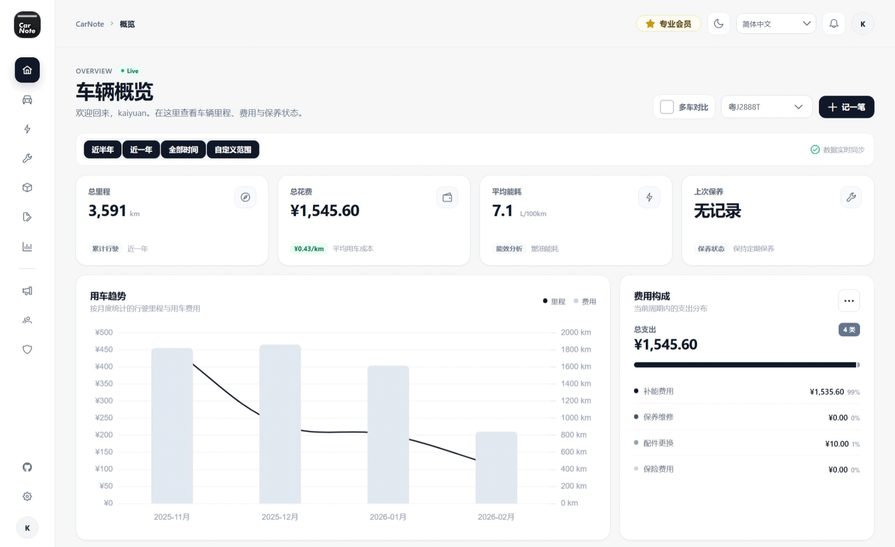

全能型车辆记录与数据分析平台。追踪油耗电耗、管理保养维修、掌控车辆全生命周期成本。私有化部署，数据完全掌握在自己手中。

精心打磨的每一个细节，只为更好的用车体验
完美支持燃油车、纯电车及混动车型。统一管理家中所有车辆，一键切换视角。
自动计算百公里油耗/电耗。支持"加满"逻辑算法，精确统计每一次补能的里程差与成本。
记录每一次保养详情、费用及单据。智能预测下次保养时间与里程，告别逾期焦虑。
甚至连雨刮器、轮胎、电瓶都能独立追踪。记录更换历史、供应商信息及保修状态。
直观的仪表盘展示月度费用趋势、能耗曲线及位置热力图。让每一分钱花得明明白白。
支持安装到手机主屏幕，提供类原生 App 的流畅体验。随时随地，快速记账。
基于 Docker 容器化技术，您可以轻松在 NAS、服务器或个人电脑上部署您私有的 CarNote。
docker-compose up -d